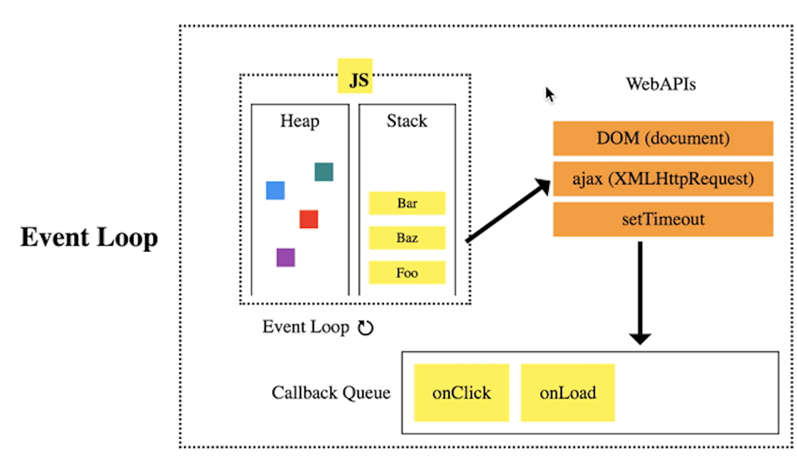

The Event Loop

Source: https://medium.com/@Rahulx1/understanding-event-loop-call-stack-event-job-queue-in-javascript-63dcd2c71ecd
The Queue
- First in First Out (FIFO)
- Composed of messages
- Messages are sent from the Queue to the Stack
- A message is run to completion before the next is sent to the stack
Note: in the browser, there are two Queues: the Callback Queue and the Render Queue.
While the Callback Queue sends a message to the Stack as soon as allowed, the Render Queue attempts to run a new render event every 16.6ms (60 fps).
Web APIs
- Things like
setTimeout() are not actually a part of the JS core language.
- JS engines/browsers make certain APIs accessible such as:
setTimeout(), setInterval(), and requestAnimationFrame()- DOM events
- AJAX calls
- Web APIs have the ability to add new messages to the Callback Queue
The Event Loop
- The Event Loop is the culmination of the:
- Stack
- Web APIs
- Event Queue
- Render Queue
- The loop is composed of:
- The stack runs the current set of frames to completion
- If a Wep API is utilized to add events, new messages are added to the Queue
- The "first in" message is pushed onto the Stack and run to completion
- In between new Event Queue messages, Render Queue messages are prioritized
- As new messages are turned into frames on the Stack (or the user interacts with the web page), new Events may be created via a Web API
Visual Example
See Here
Coding Example
Arrays and Buttons: